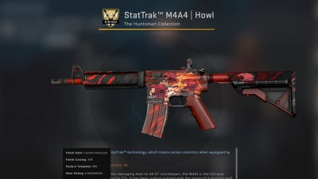

En este juego tambien es famoso por su mercado de "skins", tanto como en otros juegos existen skins que son mejores visuales de objetos, dichas skins no ayudan ni afectan al juego ni al jugador, nada mas son simples mejoras visuales. Dicho esto, este juego tiene un mercado de skins un tanto diferente al de la mayoria, este es un poco mas complejo si se quiere y dependiendo de cada skin podemos hablar de mucho dinero. Para hacernos una idea la venta de skins mas cara regristrada fue el arma M4A1 Howl StattraK, que fue vendida a un precio de $130.000 dolares.  La gran mayoria de skins, pueden tocarte al finalizar una partida competitiva(lo que es raro), pero tambien (que es lo mas comun) puede tocarte una caja o un grafiti. Esta caja contiene muchas skins donde varian su rareza. Hay 17 niveles de rareza en las skins del juego. Así, entre ellos, se encuentran el Nivel de Consumidor (el nivel más bajo) y el Exótico y Contrabandeado (el más raro). Este mercado funciona casi igual que una Bolsa, nada mas que con skins, donde hay demanda y ofertas. Pero.. en donde se hace toda esta compra-venta de skins ?. Pues se hace en paginas como CSGO Shop, Bitskins y CS: GO Store, pero el mas conocido y seguro si se quiere es en el propio Steam .Pero que es Steam? Steam es una plataforma de distribucion digital de videojuegos, el mas grande del mundo, desarrollada por Valve Corporations, dicha empresa es la desarrolladora del Counter Strike y es por eso que hay un mercado de cientos de miles de dolares dentro de esta plataforma. Luego de haber aclarado esto hay mas ? Si, hay mucho mas, ya que dichas cajas las puedes vender en el mercado, y los grafitis tambien, pero si las quieres abrir tendras que comprar la llave de dicha caja, que varia segun el tipo de caja que sea, ya que si, hay masomenos 16 tipos de cajas con distinas skins cada una, dichas cajas se agregan por temporadas y otras desaparecen en el tiempo. Tambien existen pegatinas que van pegadas en el arma, que dependiendo de cual sea agregan o disminuyen el valor de la misma, cada una de ellas llaveadas, asi que neceitas comprar las llavas para habrirlas. Recientemente se agrego un "pase de batalla" donde pagas y acedes a premios y trofeos si superas desafios, en este año y conto con el pase, se agregaron skins pero de personajes esto no se veia desde el Counter-Strike 1.6, donde en ese entonces tenians skins por deafults, dichas skins comodijimos anteriormente no afectan en el juego ni al jugador, nada mas son aspectos visuales.